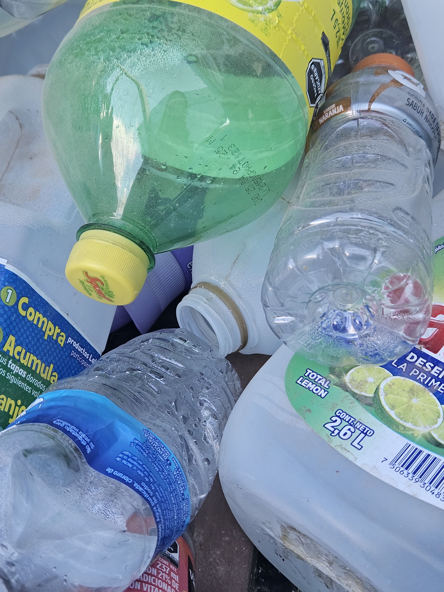

Este espacio virtual ha sido creado con un propósito muy especial: documentar cada paso de nuestro proceso de reciclaje. Aquí encontrarás información detallada sobre cómo llevamos a cabo esta importante tarea.
En nuestra bitácora, no solo encontrarás datos sobre los materiales que reciclamos y cómo los procesamos, sino que también podrás conocer más sobre quienes conforman nuestro equipo. Cada integrante contribuye de manera única a nuestro proyecto, y queremos que conozcas un poco más sobre ellos.
Explora y descubre más sobre nuestras prácticas de reciclaje. ¡Estamos emocionados de compartir nuestro viaje con ustedes y de trabajar juntos para un futuro más sostenible!
